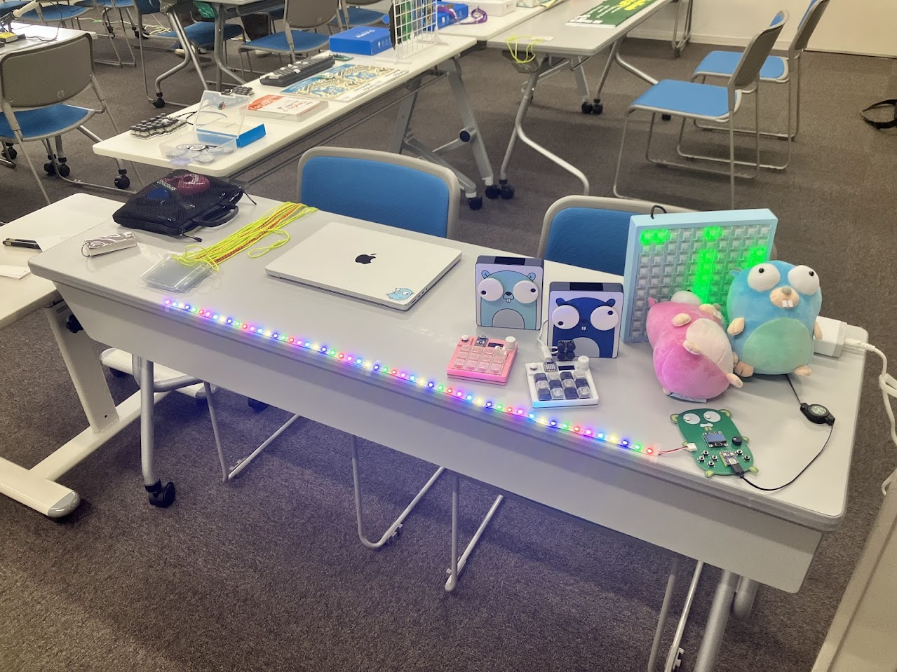
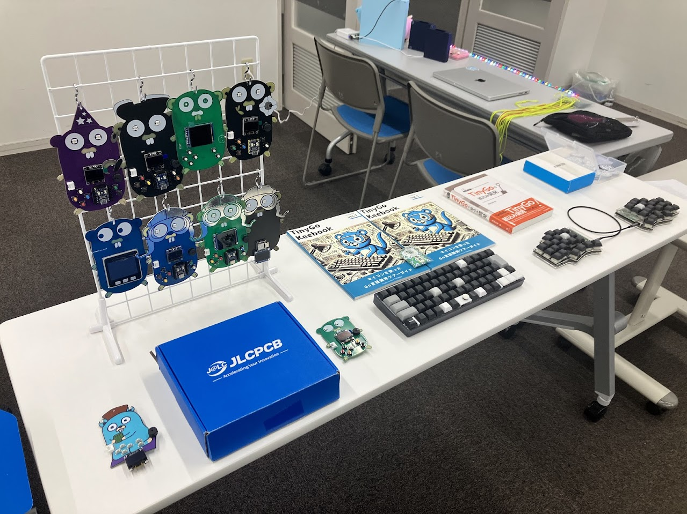
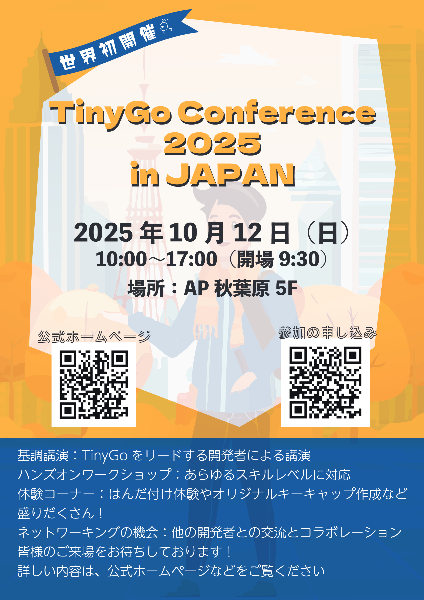

表題の通り、 TinyGo Conference 2025 in JAPAN を開催します。 TinyGo 単独のカンファレンスとしては、世界初 (のはず) です。 まずは諸情報から。
詳細や最新情報については、以下にて更新していくのでそちらを確認してください。
https://conf.tinygo-keeb.org/2025/
まだ未定な部分がありますが大きく分けて以下の 3 つで構成されます。
セッションは 20 分枠で TinyGo に関するあらゆることを扱います。 組込だけではなく Wasm や WASI なども大歓迎です。 2025/08/23 までセッション / LT の登壇を募集しているのでどしどしご応募ください。
応募は以下からお願いします。
https://sessionize.com/tinygo-conference-2025-in-japan
TinyGo に関する展示を行います。 TinyGo で作られたソフトウェアや組込の制作物などが展示される予定です。 書籍や同人誌も展示される予定。
イメージとしては以下のような感じでしょうか。 以下は TinyGo Keeb Tour 2025 in Kanazawa 2nd の受付であり、展示スペースはさらに気合が入った形になる予定。


はんだ付けができる会場で開催するので TinyGo Keeb Tour のようにはんだ付けを伴うワークショップを予定しています。 今のところ、以下を実施予定ですがまだ詳細は確定していません。
Go のマスコットキャラクターの Gopher を型取ったオリジナル基板を使って、はんだ付けやソフトの作成などを実施していく予定。
当日皆さんにお配りする名札にパーツをはんだ付け、自作キーボードにしたり、 koebiten が動くボードにしてみたり、という予定。
ブランクのキーキャップに対して、デコレーションを行うワークショップを予定。 1 キーあたり 5 ～ 10 分程度で実施可能なので、任意のタイミングで立ち寄るもよし。
以下にフライヤーを作ったので A4 カラー印刷するなどして適宜見たり配ったりしてくれると嬉しい。ダウンロードは以下から。

ってことで、上記のようなイベントを開催します。 お楽しみに。 是非、参加 / 登壇の登録をお願いします。 登壇の登録は 2025/08/23 までです。
以下のページから登録できます。
TinyGo Conference 2025 in JAPAN
URL : https://conf.tinygo-keeb.org
場所 : AP 秋葉原 (東京都)
日時 : 2025/10/12 (日)